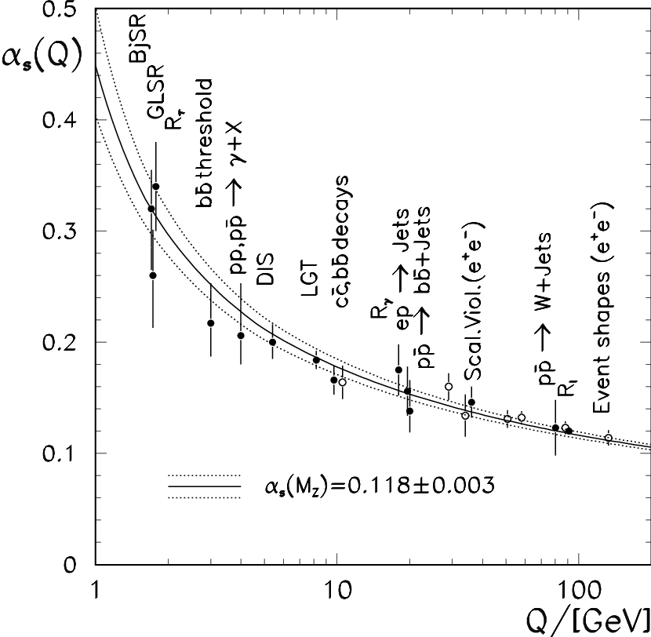
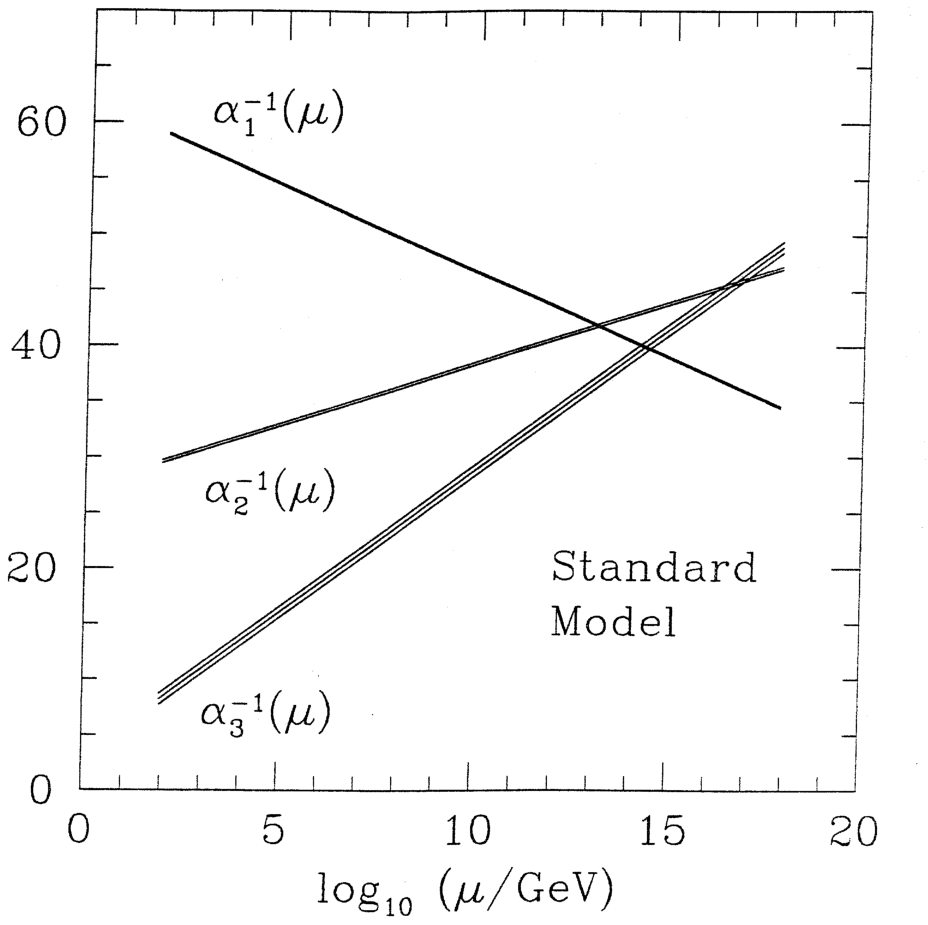
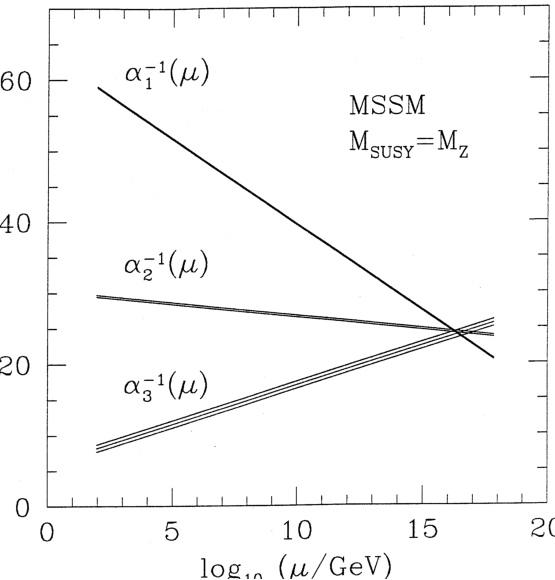

Local copy of the HTML for Frank Wilczek, “Quantum Field Theory,” arXiv:hep-th/9803075 (1998), report IASSNS-HEP-98/20. The journal version is Reviews of Modern Physics 71 (1999) S85–S95. Figures are saved with this page.
Quantum Field Theory
Frank Wilczek. Institute for Advanced Study, School of Natural Science, Olden Lane, Princeton, NJ 08540. wilczek@ias.edu. IASSNS-HEP 98/20. To appear in the American Physical Society Centenary issue of Reviews of Modern Physics, March 1999.
Abstract
I discuss the general principles underlying quantum field theory, and attempt to identify its most profound consequences. The deepest of these consequences result from the infinite number of degrees of freedom invoked to implement locality. I mention a few of its most striking successes, both achieved and prospective. Possible limitations of quantum field theory are viewed in the light of its history.
I Survey
Quantum field theory is the framework in which the regnant theories of the electroweak and strong interactions, which together form the Standard Model, are formulated. Quantum electrodynamics (QED), besides providing a complete foundation for atomic physics and chemistry, has supported calculations of physical quantities with unparalleled precision. The experimentally measured value of the magnetic dipole moment of the muon,
| (1) |
for example, should be compared with the theoretical prediction
| (2) |
In quantum chromodynamics (QCD) we cannot, for the forseeable future, aspire to to comparable accuracy. Yet QCD provides different, and at least equally impressive, evidence for the validity of the basic principles of quantum field theory. Indeed, because in QCD the interactions are stronger, QCD manifests a wider variety of phenomena characteristic of quantum field theory. These include especially running of the effective coupling with distance or energy scale and the phenomenon of confinement. QCD has supported, and rewarded with experimental confirmation, both heroic calculations of multi-loop diagrams and massive numerical simulations of (a discretized version of) the complete theory.
Quantum field theory also provides powerful tools for condensed matter physics, especially in connection with the quantum many-body problem as it arises in the theory of metals, superconductivity, the low-temperature behavior of the quantum liquids He3 and He4, and the quantum Hall effect, among others. Although for reasons of space and focus I will not attempt to do justice to this aspect here, the continuing interchange of ideas between condensed matter and high energy theory, through the medium of quantum field theory, is a remarkable phenomenon in itself. A partial list of historically important examples includes global and local spontaneous symmetry breaking, the renormalization group, effective field theory, solitons, instantons, and fractional charge and statistics.
It is clear, from all these examples, that quantum field theory occupies a central position in our description of Nature. It provides both our best working description of fundamental physical laws, and a fruitful tool for investigating the behavior of complex systems. But the enumeration of examples, however triumphal, serves more to pose than to answer more basic questions: What are the essential features of quantum field theory? What does quantum field theory add to our understanding of the world, that was not already present in quantum mechanics and classical field theory separately?
The first question has no sharp answer. Theoretical physicists are very flexible in adapting their tools, and no axiomization can keep up with them. However I think it is fair to say that the characteristic, core ideas of quantum field theory are twofold. First, that the basic dynamical degrees of freedom are operator functions of space and time – quantum fields, obeying appropriate commutation relations. Second, that the interactions of these fields are local. Thus the equations of motion and commutation relations governing the evolution of a given quantum field at a given point in space-time should depend only on the behavior of fields and their derivatives at that point. One might find it convenient to use other variables, whose equations are not local, but in the spirit of quantum field theory there must always be some underlying fundamental, local variables. These ideas, combined with postulates of symmetry (e.g., in the context of the standard model, Lorentz and gauge invariance) turn out to be amazingly powerful, as will emerge from our further discussion below.
The field concept came to dominate physics starting with the work of Faraday in the mid-nineteenth century. Its conceptual advantage over the earlier Newtonian program of physics, to formulate the fundamental laws in terms of forces among atomic particles, emerges when we take into account the circumstance, unknown to Newton (or, for that matter, Faraday) but fundamental in special relativity, that influences travel no farther than a finite limiting speed. For then the force on a given particle at a given time cannot be deduced from the positions of other particles at that time, but must be deduced in a complicated way from their previous positions. Faraday’s intuition that the fundamental laws of electromagnetism could be expressed most simply in terms of fields filling space and time was of course brilliantly vindicated by Maxwell’s mathematical theory.
The concept of locality, in the crude form that one can predict the behavior of nearby objects without reference to distant ones, is basic to scientific practice. Practical experimenters – if not astrologers – confidently expect, on the basis of much successful experience, that after reasonable (generally quite modest) precautions to isolate their experiments they will obtain reproducible results. Direct quantitative tests of locality, or rather of its close cousin causality, are afforded by dispersion relations.
The deep and ancient historic roots of the field and locality concepts provide no guarantee that these concepts remain relevant or valid when extrapolated far beyond their origins in experience, into the subatomic and quantum domain. This extrapolation must be judged by its fruits. That brings us, naturally, to our second question.
Undoubtedly the single most profound fact about Nature that quantum field theory uniquely explains is the existence of different, yet indistinguishable, copies of elementary particles. Two electrons anywhere in the Universe, whatever their origin or history, are observed to have exactly the same properties. We understand this as a consequence of the fact that both are excitations of the same underlying ur-stuff, the electron field. The electron field is thus the primary reality. The same logic, of course, applies to photons or quarks, or even to composite objects such as atomic nuclei, atoms, or molecules. The indistinguishability of particles is so familiar, and so fundamental to all of modern physical science, that we could easily take it for granted. Yet it is by no means obvious. For example, it directly contradicts one of the pillars of Leibniz’ metaphysics, his “principle of the identity of indiscernables,” according to which two objects cannot differ solely in number. And Maxwell thought the similarity of different molecules so remarkable that he devoted the last part of his Encyclopedia Brittanica entry on Atoms – well over a thousand words – to discussing it. He concluded that “the formation of a molecule is therefore an event not belonging to that order of nature in which we live … it must be referred to the epoch, not of the formation of the earth or the solar system … but of the establishment of the existing order of nature …”
The existence of classes of indistinguishable particles is the necessary logical prerequisite to a second profound insight from quantum field theory: the assignment of unique quantum statistics to each class. Given the indistinguishability of a class of elementary particles, and complete invariance of their interactions under interchange, the general principles of quantum mechanics teach us that solutions forming any representation of the permutation symmetry group retain that property in time, but do not constrain which representations are realized. Quantum field theory not only explains the existence of indistinguishable particles and the invariance of their interactions under interchange, but also constrains the symmetry of the solutions. For bosons only the identity representation is physical (symmetric wave functions), for fermions only the one-dimensional odd representation is physical (antisymmetric wave functions). One also has the spin-statistics theorem, according to which objects with integer spin are bosons, whereas objects with half odd integer spin are fermions. Of course, these general predictions have been verified in many experiments. The fermion character of electrons, in particular, underlies the stability of matter and the structure of the periodic table.
A third profound general insight from quantum field theory is the existence of antiparticles. This was first inferred by Dirac on the basis of a brilliant but obsolete interpretation of his equation for the electron field, whose elucidation was a crucial step in the formulation of quantum field theory. In quantum field theory, we re-interpret the Dirac wave function as a position (and time) dependent operator. It can be expanded in terms of the solutions of the Dirac equation, with operator coefficients. The coefficients of positive-energy solutions are operators that destroy electrons, and the coefficients of the negative-energy solutions are operators that create positrons (with positive energy). With this interpretation, an improved version of Dirac’s hole theory emerges in a straightforward way. (Unlike the original hole theory, it has a sensible generalization to bosons, and to processes where the number of electrons minus positrons changes.) A very general consequence of quantum field theory, valid in the presence of arbitrarily complicated interactions, is the CPT theorem. It states that the product of charge conjugation, parity, and time reversal is always a symmetry of the world, although each may be – and is! – violated separately. Antiparticles are strictly defined as the CPT conjugates of their corresponding particles.
The three outstanding facts we have discussed so far: the existence of indistinguishable particles, the phenomenon of quantum statistics, and the existence of antiparticles, are all essentially consequences of free quantum field theory. When one incorporates interactions into quantum field theory, two additional general features of the world immediately become brightly illuminated.
The first of these is the ubiquity of particle creation and destruction processes. Local interactions involve products of field operators at a point. When the fields are expanded into creation and annihilation operators multiplying modes, we see that these interactions correspond to processes wherein particles can be created, annihilated, or changed into different kinds of particles. This possibility arises, of course, in the primeval quantum field theory, quantum electrodynamics, where the primary interaction arises from a product of the electron field, its Hermitean conjugate, and the photon field. Processes of radiation and absorption of photons by electrons (or positrons), as well as electron-positron pair creation, are encoded in this product. Just because the emission and absorption of light is such a common experience, and electrodynamics such a special and familiar classical field theory, this correspondence between formalism and reality did not initially make a big impression. The first conscious exploitation of the potential for quantum field theory to describe processes of transformation was Fermi’s theory of beta decay. He turned the procedure around, inferring from the observed processes of particle transformation the nature of the underlying local interaction of fields. Fermi’s theory involved creation and annihilation not of photons, but of atomic nuclei and electrons (as well as neutrinos) – the ingredients of ‘matter’. It began the process whereby classic atomism, involving stable individual objects, was replaced by a more sophisticated and accurate picture. In this picture it is only the fields, and not the individual objects they create and destroy, that are permanent.
The second is the association of forces and interactions with particle exchange. When Maxwell completed the equations of electrodynamics, he found that they supported source-free electromagnetic waves. The classical electric and magnetic fields thus took on a life of their own. Electric and magnetic forces between charged particles are explained as due to one particle acting as a source for electric and magnetic fields, which then influence others. With the correspondence of fields and particles, as it arises in quantum field theory, Maxwell’s discovery corresponds to the existence of photons, and the generation of forces by intermediary fields corresponds to the exchange of virtual photons. The association of forces (or, more generally, interactions) with exchange of particles is a general feature of quantum field theory. It was used by Yukawa to infer the existence and mass of pions from the range of nuclear forces, and more recently in electroweak theory to infer the existence, mass, and properties of W and Z bosons prior to their observation, and in QCD to infer the existence and properties of gluon jets prior to their observation.
The two additional outstanding facts we just discussed: the possibility of particle creation and destruction, and the association of particles with forces, are essentially consequences of classical field theory supplemented by the connection between particles and fields we learn from free field theory. Indeed, classical waves with nonlinear interactions will change form, scatter, and radiate, and these processes exactly mirror the transformation, interaction, and creation of particles. In quantum field theory, they are properties one sees already in tree graphs.
The foregoing major consequences of free quantum field theory, and of its formal extension to include nonlinear interactions, were all well appreciated by the late 1930s. The deeper properties of quantum field theory, which will form the subject of the remainder of this paper, arise from the need to introduce infinitely many degrees of freedom, and the possibility that all these degrees of freedom are excited as quantum-mechanical fluctuations. From a mathematical point of view, these deeper properties arise when we consider loop graphs.
From a physical point of view, the potential pitfalls associated with the existence of an infinite number of degrees of freedom first showed up in connection with the problem which led to the birth of quantum theory, that is the ultraviolet catastrophe of blackbody radiation theory. Somewhat ironically, in view of later history, the crucial role of the quantum theory here was to remove the disastrous consequences of the infinite number of degrees of freedom possessed by classical electrodynamics. The classical electrodynamic field can be decomposed into independent oscillators with arbitrarily high values of the wavevector. According to the equipartition theorem of classical statistical mechanics, in thermal equilibrium at temperature each of these oscillators should have average energy . Quantum mechanics alters this situation by insisting that the oscillators of frequency have energy quantized in units of . Then the high-frequency modes are exponentially suppressed by the Boltzmann factor, and instead of receive . The role of the quantum, then, is to prevent accumulation of energy in the form of very small amplitude excitations of arbitrarily high frequency modes. It is very effective in suppressing the thermal excitation of high-frequency modes.
But while removing arbitrarily small amplitude excitations, quantum theory introduces the idea that the modes are always intrinsically excited to a small extent, proportional to . This so-called zero point motion is a consequence of the uncertainty principle. For a harmonic oscillator of frequency , the ground state energy is not zero, but . In the case of the electromagnetic field this leads, upon summing over its high-frequency modes, to a highly divergent total ground state energy. For most physical purposes the absolute normalization of energy is unimportant, and so this particular divergence does not necessarily render the theory useless. 11 1 One would think that gravity should care about the absolute normalization of energy. The zero-point energy of the electromagnetic field, in that context, generates an infinite cosmological constant. This might be cancelled by similar negative contributions from fermion fields, as occurs in supersymmetric theories, or it might indicate the need for some other profound modification of physical theory. It does, however, illustrate the dangerous character of the high-frequency modes, and its treatment gives a first indication of the leading theme of renormalization theory: we can only require – and generally will only obtain – sensible, finite answers when we ask questions that have direct, operational physical meaning.
The existence of an infinite number of degrees of freedom was first encountered in the theory of the electromagnetic field, but it is a general phenomenon, deeply connected with the requirement of locality in the interactions of fields. For in order to construct the local field at a space-time point , one must take a superposition
| (3) |
that includes field components extending to arbitrarily large momenta. Moreover in a generic interaction
| (4) |
we see that a low momentum mode will couple without any suppression factor to high-momentum modes and . Local couplings are “hard”, in this sense. Because locality requires the existence of infinitely many degrees of freedom at large momenta, with hard interactions, ultraviolet divergences similar to the ones cured by Planck, but driven by quantum rather than thermal fluctuations, are never far off stage. As mentioned previously, the deeper physical consequences of quantum field theory arise from this circumstance.
First of all, it is much more difficult to construct non-trivial examples of interacting relativistic quantum field theories than purely formal considerations would suggest. One finds that the consistent quantum field theories form a quite limited class, whose extent depends sensitively on the dimension of space-time and the spins of the particles involved. Their construction is quite delicate, requiring limiting procedures whose logical implementation leads directly to renormalization theory, the running of couplings, and asymptotic freedom.
Secondly, even those quantum theories that can be constructed display less symmetry than their formal properties would suggest. Violations of naive scaling relations – that is, ordinary dimensional analysis – in QCD, and of baryon number conservation in the standard electroweak model are examples of this general phenomenon. The original example, unfortunately too complicated to explain fully here, involved the decay process , for which chiral symmetry (treated classically) predicts much too small a rate. When the correction introduced by quantum field theory (the so-called ‘anomaly’) is retained, excellent agreement with experiment results.
These deeper consequences of quantum field theory, which might superficially appear rather technical, largely dictate the structure and behavior of the Standard Model – and, therefore, of the physical world. My goal in this preliminary survey has been to emphasize their profound origin. In the rest of the article I hope to convey their main implications, in as simple and direct a fashion as possible.
II Formulation
The physical constants and are so deeply embedded in the formulation of relativistic quantum field theory that it is standard practice to declare them to be the units of action and velocity, respectively. In these units, of course, . With this convention, all physical quantities of interest have units which are powers of mass. Thus the dimension of momentum is (mass)1 or simply 1, since mass is a momentum, and the dimension of length is (mass)-1 or simply -1, since /mass is a length. The usual way to construct quantum field theories is by applying the rules of quantization to a continuum field theory, following the canonical procedure of replacing Poisson brackets by commutators (or, for fermionic fields, anticommutators). The field theories that describe free spin 0 or free spin fields of mass respectively are based on the Lagrangian densities
| (5) |
| (6) |
Since the action has mass dimension 0, the mass dimension of a scalar field like is 1 and of a spinor field like is . For free spin 1 fields the Lagrangian density is that of Maxwell,
| (7) |
so that the mass dimension of the vector field is 1. The same result is true for non-abelian vector fields (Yang-Mills fields).
Thus far all our Lagrangian densities have been quadratic in the fields. Local interaction terms are obtained from Lagrangian densities involving products of fields and their derivatives at a point. The coefficient of such a term is a coupling constant, and must have the appropriate mass dimension so that the Lagrangian density has mass dimension 4. Thus the mass dimension of a Yukawa coupling , which multiplies the product of two spinor fields and a scalar field, is zero. Gauge couplings arising in the minimal coupling procedure are also evidently of mass dimension zero.
The possibilities for couplings with non-negative mass dimension are very restricted. This fact is quite important, for the following reason. Consider the effect of treating a given interaction term as a perturbation. If the coupling associated to this interaction has negative mass dimension -p, then successive powers of it will occur in the form of powers of , where is some parameter with dimensions of mass. Because, as we have seen, the interactions in a local field theory are hard, we can anticipate that will characterize the largest mass scale we allow to occur (the cutoff), and will diverge to infinity as the limit on this mass scale is removed. So we expect that it will be difficult to make sense of fundamental interactions having negative mass dimensions, at least in perturbation theory. Such interactions are said to be nonrenormalizable.
The standard model is formulated entirely using renormalizable interactions. It has been said that this is not in itself a fundamental fact about nature. For if non-renormalizable interactions occurred in the effective description of physical behavior below a certain mass scale, it would simply mean that the theory must change its nature – presumably by displaying new degrees of freedom – at some larger mass scale. If we adopt this point of view, the significance of the fact that the standard model contains only renormalizable operators is that it does not require modification up to arbitrarily high scales (at least on the grounds of divergences in perturbation theory). Whether or not we call this a fundamental fact, it is certainly a profound one.
Moreover, all the renormalizable interactions consistent with the gauge symmetry and multiplet structure of the standard model do seem to occur – “what is not forbidden, is mandatory”. There is a beautiful agreement between the symmetries of the standard model, allowing arbitrary renormalizable interactions, and the symmetries of the world. One understands why strangeness is violated, but baryon number is not. (The only discordant element is the so-called term of QCD, which is allowed by the symmetries of the standard model but is measured to be quite accurately zero. A plausible solution to this problem exists. It involves a characteristic very light axion field.)
The power counting rules for estimating divergences assume that there are no special symmetries cancelling off the contribution of high energy modes. They do not apply, without further consideration, to supersymmetric theories, in which the contributions of boson and fermionic modes cancels, nor to theories derived from supersymmetric theories by soft supersymmetry breaking. In the latter case the scale of supersymmetry breaking plays the role of the cutoff .
The power counting rules, as discussed so far, are too crude to detect divergences of the form . Yet divergences of this form are pervasive and extremely significant, as we shall now discuss.
III Running Couplings
The problem of calculating the energy associated with a constant magnetic field, in the more general context of an arbitrary nonabelian gauge theory coupled to spin 0 and spin charged particles, provides an excellent concrete illustration of how the infinities of quantum field theory arise, and of how they are dealt with. It introduces the concept of running couplings in a natural way, and leads directly to qualitative and quantitative results of great significance for physics. The interactions of concern to us appear in the Lagrangian density
| (8) |
where and are the standard field strengths and covariant derivative, respectively. Here the are the structure constants of the gauge group, and the are the representation matrices appropriate to the field on which the covariant derivative acts. This Lagrangian differs from the usual one by a rescaling , which serves to emphasize that the gauge coupling occurs only as a prefactor in the first term. It parametrizes the energetic cost of non-trivial gauge curvature, or in other words the stiffness of the gauge fields. Small corresponds to gauge fields that are difficult to excite.
From this Lagrangian itself, of course, it would appear that the energy required to set up a magnetic field is just . This is the classical energy, but in the quantum theory it is not the whole story. A more accurate calculation must take into account the effect of the imposed magnetic field on the zero-point energy of the charged fields. Earlier, we met and briefly discussed a formally infinite contribution to the energy of the ground state of a quantum field theory (specifically, the electromagnetic field) due to the irreducible quantum fluctuations of its modes, which mapped to an infinite number of independent harmonic oscillators. Insofar as only differences in energy are physically significant, we could ignore this infinity. But the change in the zero-point energy as one imposes a magnetic field cannot be ignored. It represents a genuine contribution to the physical energy of the quantum state induced by the imposed magnetic field. As we will soon see, the field-dependent part of the energy also diverges.
Postponing momentarily the derivation, let me anticipate the form of the answer, and discuss its interpretation. Without loss of generality, I will suppose that the magnetic field is aligned along a normalized, diagonal generator of the gauge group. This allows us to drop the index, and to use terminology and intuition from electrodynamics freely. If we restrict the sum to modes whose energy is less than a cutoff , we find for the energy
| (9) |
where
| (10) |
and the terms not displayed are finite as . The notation has been introduced for later convenience. The factor is the trace of the representation for spin , and basically represents the sum of the squares of the charges for the particles of that spin. The denominator in the logarithm is fixed by dimensional analysis, assuming .
The most striking, and at first sight disturbing, aspect of this calculation is that a cutoff is necessary in order to obtain a finite result. If we are not to introduce a new fundamental scale, and thereby (in view of our previous discussion) endanger locality, we must remove reference to the arbitrary cutoff in our description of physically meaningful quantities. This is the sort of problem addressed by the renormalization program. Its guiding idea is the thought that if we are working with experimental probes characterized by energy and momentum scales well below , we should expect that our capacity to affect, or be sensitive to, the modes of much higher energy will be quite restricted. Thus one expects that the cutoff , which was introduced as a calculational device to remove such modes, can be removed (taken to infinity). In our magnetic energy example, for instance, we see immediately that the difference in susceptibilities
| (11) |
is well-behaved – that is, independent of as . Thus once we measure the susceptibility, or equivalently the coupling constant, at one reference value of , the calculation gives sensible, unambiguous predictions for all other values of .
This simple example illustrates a much more general result, the central result of the classic renormalization program. It goes as follows. A small number of quantities, corresponding to the couplings and masses in the original Lagrangian, that if calculated formally would diverge or depend on the cutoff, are chosen to fit experiment. They define the physical, as opposed to the original, or bare, couplings. Thus, in our example, we can define the susceptibility to be at some reference field . Then we have the physical or renormalized coupling
| (12) |
(In this equation I have ignored, for simplicity in exposition, the finite terms. These are relatively negligible for large . Also, there are corrections of higher order in .) This of course determines the ‘bare’ coupling to be
| (13) |
In these terms, the central result of diagrammatic renormalization theory is that after bare couplings and masses are re-expressed in terms of their physical, renormalized counterparts, the coefficients in the perturbation expansion of any physical quantity approach finite limits, independent of the cutoff, as the cutoff is taken to infinity. (To be perfectly accurate, one must also perform wave-function renormalization. This is no different in principle; it amounts to expressing the bare coefficients of the kinetic terms in the Lagrangian in terms of renormalized values.)
The question whether this perturbation theory converges, or is some sort of asymptotic expansion of a soundly defined theory, is left open by the diagrammatic analysis. This loophole is no mere technicality, as we will soon see.
Picking a scale at which the coupling is defined is analogous to choosing the origin of a coordinate system in geometry. One can describe the same physics using different choices of normalization scale, so long as one adjusts the coupling appropriately. We capture this idea by introducing the concept of a running coupling defined, in accordance with equation (12), to satisfy
| (14) |
With this definition, the choice of a particular scale at which to define the coupling will not affect the final result.
It is profoundly important, however, that the running coupling does make a real distinction between the behavior at different mass scales, even if the original underlying theory was formally scale invariant (as is QCD with massless quarks), and even at mass scales much larger than the mass of any particle in the theory. Quantum zero-point motion of the high energy modes introduces a hard source of scale symmetry violation.
The distinction among scales, in a formally scale-invariant theory, embodies the phenomenon of dimensional transmutation. Rather than a range of theories, parametrized by a dimensionless coupling, we have a range of theories differing only in the value of a dimensional parameter, say (for example) the value of at which .
Clearly, the qualitative behavior of solutions of eq. (14) depends on the sign of . If , the coupling will get smaller as grows, or in other words as we treat more and more modes as dynamical, and approach closer to the ‘bare’ charge. These modes were enhancing, or antiscreening the bare charge. This is the case of asymptotic freedom. In the opposite case of the coupling formally grows, and even diverges as increases. goes through zero and changes sign. On the face of it, this would seem to indicate an instability of the theory, toward formation of a ferromagnetic vacuum at large field strength. This conclusion must be taken with a big grain of salt, because when is large the higher-order corrections to eq. (13) and eq. (14), on which the analysis was based, cannot be neglected.
In asymptotically free theories, we can complete the renormalization program in a convincing fashion. There is no barrier to including the effect of very large energy modes, and removing the cutoff. We can confidently expect, then, that the theory is well-defined, independent of perturbation theory. In particular, suppose the theory has been discretized on a space-time lattice. This amounts to excluding the modes of high energy and momentum. In an asymptotically free theory one can compensate for these modes by adjusting the coupling in a well-defined, controlled way as one shrinks the discretization scale. Very impressive nonperturbative calculations in QCD, involving massive computer simulations, have exploited this strategy. They demonstrate the complete consistency of the theory and its ability to account quantitatively for the masses of hadrons.
In a non-asymptotically free theory the coupling does not become small, there is no simple foolproof way to compensate for the missing modes, and the existence of an underlying limiting theory becomes doubtful.
Now let us discuss how can be calculated. The two terms in eq. (10) correspond to two distinct physical effects. The first is the convective, diamagnetic (screening) term. The overall constant is a little tricky to calculate, and I do not have space to do it here. Its general form, however, is transparent. The effect is independent of spin, and so it simply counts the number of components (one for scalar particles, two for spin-1/2 or massless spin-1, both with two helicities). It is screening for bosons, while for fermions there is a sign flip, because the zero-point energy is negative for fermionic oscillators.
The second is the paramagetic spin susceptibility. For a massless particle with spin and gyromagnetic ratio the energies shift, giving rise to the altered zero-point energy
| (15) |
This is readily calculated as
| (16) |
With , (and ) this is the spin-1 contribution, and with , , after a sign flip, it is the spin- contribution. The preferred moment is a direct consequence of the Yang-Mills and Dirac equations, respectively.
This elementary calculation gives us a nice heuristic understanding of the unusual antiscreening behavior of nonabelian gauge theories. It is due to the large paramagnetic response of charged vector fields. Because we are interested in very high energy modes, the usual intuition that charge will be screened, which is based on the electric response of heavy particles, does not apply. Magnetic interactions, which can be attractive for like charges (paramagnetism) are, for highly relativistic particles, in no way suppressed. Indeed, they are numerically dominant.
Though I have presented it in the very specific context of vacuum magnetic susceptibility, the concept of running coupling is much more widely applicable. The basic heuristic idea is that in analyzing processes whose characteristic energy-momentum scale (squared) is , it is appropriate to use the running coupling at , i.e. in our earlier notation . For in this way we capture the dynamical effect of the virtual oscillators which can be appreciably excited, while avoiding the formal divergence encountered if we tried to include all of them (up to infinite mass scale). At a more formal level, use of the appropriate effective coupling allows us to avoid large logarithms in the calculation of Feynman graphs, by normalizing the vertices close to where they need to be evaluated. There is a highly developed, elaborate chapter of quantum field theory which justifies and refines this rough idea into a form where it makes detailed, quantitative predictions for concrete experiments. I will not be able to do proper justice to the difficult, often heroic labor that has been invested, on both the theoretical and the experimental sides, to yield Figure 1; but it is appropriate to remark that quantum field theory gets a real workout, as calculations of two- and even three-loop graphs with complicated interactions among the virtual particles are needed to do justice to the attainable experimental accuracy.

An interesting feature visible in Figure 1 is that the theoretical prediction for the coupling focuses at large , in the sense that a wide range of values at small converge to a much narrower range at larger . Thus even crude estimates of what are the appropriate scales (e.g., one expects where the strong interaction is strong, say for 100 Mev 1 Gev) allow one to predict the value of with 10% accuracy. The original idea of Pauli and others that calculating the fine structure constant was the next great item on the agenda of theoretical physics now seems misguided. We see this constant as just another running coupling, neither more nor less fundamental than many other parameters, and not likely to be the most accessible theoretically. But our essentially parameter-free approximate determination of the observable strong interaction analogue of the fine structure constant realizes a form of their dream.
The electroweak interactions start with much smaller couplings at low mass scales, so the effects of their running are less dramatic (though they have been observed). Far more spectacular than the modest quantitative effects we can test directly, however, is the conceptual breakthrough that results from application of these ideas to unified models of the strong, electromagnetic, and weak interactions.
The different components of the standard model have a similar mathematical structure, all being gauge theories. Their common structure encourages the speculation that they are different facets of a more encompassing gauge symmetry, in which the different strong and weak color charges, as well as electromagnetic charge, would all appear on the same footing. The multiplet structure of the quarks and leptons in the standard model fits beautifully into small representations of unification groups such as or . There is the apparent difficulty, however, that the coupling strengths of the different standard model interactions are widely different, whereas the symmetry required for unification requires that they share a common value.The running of couplings suggests an escape from this impasse. Since the strong, weak, and electromagnetic couplings run at different rates, their inequality at currently accessible scales need not reflect the ultimate state of affairs. We can imagine that spontaneous symmetry breaking – a soft effect – has hidden the full symmetry of the unified interaction. What is really required is that the fundamental, bare couplings be equal, or in more prosaic terms, that the running couplings of the different interactions should become equal beyond some large scale.
Using simple generalizations of the formulas derived and tested in QCD, we can calculate the running of couplings, to see whether this requirement is satisfied in reality. In doing so one must make some hypothesis about the spectrum of virtual particles. If there are additional massive particles (or, better, fields) that have not yet been observed, they will contribute significantly to the running of couplings once the scale exceeds their mass. Let us first consider the default assumption, that there are no new fields beyond those that occur in the standard model. The results of this calculation are displayed in Figure 2.

Considering the enormity of the extrapolation this calculation works remarkably well, but the accurate experimental data indicates unequivocally that something is wrong. There is one particularly attractive way to extend the standard model, by including supersymmetry. Supersymmetry cannot be exact, but if it is only mildly broken (so that the superpartners have masses 1 Tev) it can help explain why radiative corrections to the Higgs mass parameter, and thus to the scale of weak symmetry breaking, are not enormously large. In the absence of supersymmetry power counting would indicate a hard, quadratic dependence of this parameter on the cutoff. Supersymmetry removes the most divergent contribution, by cancelling boson against fermion loops. If the masses of the superpartners are not too heavy, the residual finite contributions due to supersymmetry breaking will not be too large.
The minimal supersymmetric extension of the standard model, then, makes semi-quantitative predictions for the spectrum of virtual particles starting at 1 Tev or so. Since the running of couplings is logarithmic, it is not extremely sensitive to the unknown details of the supersymmetric mass spectrum, and we can assess the impact of supersymmetry on the unification hypothesis quantitatively. The results, as shown in Figure 3, are quite encouraging.

With all its attractions, there is one general feature of supersymmetry that is especially challenging, and deserves mention here. We remarked earlier how the standard model, without supersymmetry, features a near-perfect match between the generic symmetries of its renormalizable interactions and the observed symmetries of the world. With supersymmetry, this feature is spoiled. The scalar superpartners of fermions are represented by fields of mass dimension one. This means that there are many more possibilities for low dimension (including renormalizable) interactions that violate flavor symmetries including lepton and baryon number. It seems that some additional principles, or special discrete symmetries, are required in order to suppress these interactions sufficiently.
A notable result of the unification of couplings calculation, especially in its supersymmetric form, is that the unification occurs at an energy scale which is enormously large by the standards of traditional particle physics, perhaps approaching Gev. From a phenomenological viewpoint, this is fortunate. The most compelling unification schemes merge quarks, antiquarks, leptons, and antileptons into common multiplets, and have gauge bosons mediating transitions among all these particle types. Baryon number violating processes almost inevitably result, whose rate is inversely proportional to the fourth power of the gauge boson masses, and thus to the fourth power of the unification scale. Only for such large values of the scale is one safe from experimental limits on nucleon instability. From a theoretical point of view the large scale is fascinating because it brings us from the internal logic of the experimentally grounded domain of particle physics to the threshold of quantum gravity, as we shall now discuss.
IV Limitations?
So much for the successes, achieved and anticipated, of quantum field theory. The fundamental limitations of quantum field theory, if any, are less clear. Its application to gravity has certainly, to date, been much less fruitful than its triumphant application to describe the other fundamental interactions.
All existing experimental results on gravitation are adequately described by a very beautiful, conceptually simple classical field theory – Einstein’s general relativity. It is easy to incorporate this theory into our description of the world based on quantum field theory, by allowing a minimal coupling to the fields of the standard model – that is, by changing ordinary into covariant derivatives, multiplying with appropriate factors of , and adding an Einstein-Hilbert curvature term. The resulting theory – with the convention that we simply ignore quantum corrections involving virtual gravitons – is the foundation of our working description of the physical world. As a practical matter, it works very well indeed.
Philosophically, however, it might be disappointing if it were too straightforward to construct a quantum theory of gravity. One of the great visions of natural philosophy, going back to Pythagoras, is that the properties of the world are determined uniquely by mathematical principles. A modern version of this vision was formulated by Planck, shortly after he introduced his quantum of action. By appropriately combining the physical constants , as units of velocity and action, respectively, and the Planck mass as the unit of mass, one can construct any unit of measurement used in physics. Thus the unit of energy is , the unit of electric charge is , and so forth. On the other hand, one cannot form a pure number from these three physical constants. Thus one might hope that in a physical theory where , , and were all profoundly incorporated, all physical quantities could be expressed in natural units as pure numbers.
Within its domain, QCD achieves something very close to this vision – actually, in a more ambitious form! Indeed, let us idealize the world of the strong interaction slightly, by imagining that there were just two quark species with vanishing masses. Then from the two integers 3 (colors) and 2 (flavors), , and – with no explicit mass parameter – a spectrum of hadrons, with mass ratios and other properties close to those observed in reality, emerges by calculation. The overall unit of mass is indeterminate, but this ambiguity has no significance within the theory itself.
The ideal Pythagorean/Planckian theory would not contain any pure numbers as parameters. (Pythagoras might have excused a few small integers). Thus, for example, the value of the electron mass in Planck units would emerge from a dynamical calculation. This ideal might be overly ambitious, yet it seems reasonable to hope that significant constraints among physical observables will emerge from the inner requirements of a quantum theory which consistently incorporates gravity. Indeed, as we have already seen, one does find significant constraints among the parameters of the standard model by requiring that the strong, weak, and electromagnetic interactions emerge from a unified gauge symmetry; so there is precedent for results of this kind.
The unification of couplings calculation provides not only an inspiring model, but also direct encouragement for the Planck program, in two important respects. First, it points to a symmetry breaking scale remarkably close to the Planck scale (though apparently smaller by ), so there are pure numbers with much more ‘reasonable’ values than to shoot for. Second, it shows quite concretely how very large scale factors can be controlled by modest ratios of coupling strength, due to the logarithmic nature of the running of couplings – so that may not be so ‘unreasonable’ after all.
Perhaps it is fortunate, then, that the straightforward, minimal implementation of general relativity as a quantum field theory – which lacks the desired constraints – runs into problems. The problems are of two quite distinct kinds. First, the renormalization program fails, at the level of power-counting. The Einstein-Hilbert term in the action comes with a large prefactor , reflecting the difficulty of curving space-time. If we expand the Einstein-Hilbert action around flat space in the form
| (17) |
we find that the quadratic terms give a properly normalized spin-2 graviton field of mass dimension 1, as the powers of cancel. But the higher-order terms, which represent interactions, will be accompanied by positive powers of . Since itself has mass dimension -2, these are non-renormalizable interactions. Similarly for the couplings of gravitons to matter. Thus we can expect that ever-increasing powers of will appear in multiple virtual graviton exchange, and it will be impossible to remove the cutoff.
Second, one of the main qualitative features of gravity – the weightlessness of empty space, or the vanishing of the cosmological constant – is left unexplained. Earlier we mentioned the divergent zero-point energy characteristic of generic quantum field theories. For purposes of non-gravitational physics only energy differences are meaningful, and we can sweep this problem under the rug. But gravity ought to see this energy. Our perplexity intensifies when we recall that according to the standard model, and even more so in its unified extensions, what we commonly regard as empty space is full of condensates, which again one would expect to weigh far more than observation allows. The failure, so far, of quantum field theory to meet these challenges might reflect a basic failure of principle, or merely that the appropriate symmetry principles and degrees of freedom, in terms of which the theory should be formulated, have not yet been identified.
Promising insights toward construction of a quantum theory including gravity are coming from investigations in string/M theory, as discussed elsewhere in this volume. Whether these investigations will converge toward an accurate description of nature, and if so whether this description will take the form of a local field theory (perhaps formulated in many dimensions, and including many fields beyond those of the standard model) , are questions not yet decided. It is interesting, in this regard, briefly to consider the rocky intellectual history of quantum field theory.
After the initial successes of the 1930s, already mentioned above, came a long period of disillusionment. Initial attempts to deal with the infinities that arose in calculations of loop graphs in electrodynamics, or in radiative corrections to beta decay, led only to confusion and failure. Similar infinities plagued Yukawa’s pion theory, and it had the additional difficulty that the coupling required to fit experiment is large, so that tree graphs provide a manifestly poor approximation. Many of the founders of quantum theory, including Bohr, Heisenberg, Pauli, and (for different reasons) Einstein and Schrodinger, felt that further progress required a radically new innovation. This innovation would be a revolution of the order of quantum mechanics itself, and would introduce a new fundamental length.
Quantum electrodynamics was resurrected in the late 1940s, largely stimulated by developments in experimental technique. These experimental developments made it possible to study atomic processes with such great precision, that the approximation afforded by keeping tree graphs alone could not do them justice. Methods to extract sensible finite answers to physical questions from the jumbled divergences were developed, and spectacular agreement with experiment was found – all without changing electrodynamics itself, or departing from the principles of relativistic quantum field theory.
After this wave of success came another long period of disillusionment. The renormalization methods developed for electrodynamics did not seem to work for weak interaction theory. They did suffice to define a perturbative expansion of Yukawa’s pion theory, but the strong coupling made that limited success academic (and it came to seem utterly implausible that Yukawa’s schematic theory could do justice to the wealth of newly discovered phenomena). In any case, as a practical matter, throughout the 1950s and 1960s a flood of experimental discoveries, including new classes of weak processes and a rich spectrum of hadronic resonances with complicated interactions, had to be absorbed and correlated. During this process of pattern recognition the elementary parts of quantum field theory were used extensively, as a framework, but deeper questions were put off. Many theorists came to feel that quantum field theory, in its deeper aspects, was simply wrong, and would need to be replaced by some S-matrix or bootstrap theory; perhaps most thought it was irrelevant, or that its use was premature, especially for the strong interaction.
As it became clear, through phenomenological work, that the weak interaction is governed by currentcurrent interactions with universal strength, the possibility to ascribe it to exchange of vector gauge bosons became quite attractive. Models incorporating the idea of spontaneous symmetry breaking to give mass to the weak gauge bosons were constructed. It was conjectured, and later proved, that the high degree of symmetry in these theories allows one to isolate and control the infinities of perturbation theory. One can carry out a renormalization program similar in spirit, though considerably more complex in detail, to that of QED. It is crucial, here, that spontaneous symmetry breaking is a very soft operation. It does not significantly affect the symmetry of the theory at large momenta, where the potential divergences must be cancelled.
Phenomenological work on the strong interaction made it increasingly plausible that the observed strongly interacting particles – mesons and baryons – are composites of more basic objects. The evidence was of two disparate kinds: on the one hand, it was possible in this way to make crude but effective models for the observed spectrum with mesons as quark-antiquark, and baryons as quark-quark-quark, bound states; and on the other hand, experiments provided evidence for hard interactions of photons with hadrons, as would be expected if the components of hadrons were described by local fields. The search for a quantum field theory with appropriate properties led to a unique candidate, which contained both objects that could be identified with quarks and an essentially new ingredient, color gluons.
These quantum field theories of the weak and strong interactions were dramatically confirmed by subsequent experiments, and have survived exceedingly rigorous testing over the past two decades. They make up the Standard Model. During this period the limitations, as well as the very considerable virtues, of the Standard Model have become evident. Whether the next big step will require a sharp break from the principles of quantum field theory or, like the previous ones, a better appreciation of its potentialities, remains to be seen.
Acknowledgments
I wish to thank S. Treiman for extremely helpful guidance, and M. Alford, K. Babu, C. Kolda, and J. March-Russell for reviewing the manuscript. F.W. is supported in part by DOE grant DE-FG02-90ER40542
References
For further information about quantum field theory, the reader may wish to consult:
- 1.
T.P. Cheng and L.F. Li, Gauge Theory of Elementary Particle Physics, (Oxford, 1984).
- 2.
M. Peskin and D. Schroeder, Introduction to Quantum Field Theory, (Addison-Wesley, 1995).
- 3.
S. Weinberg, The Quantum Theory of Fields, I, (Cambridge, 1995) and The Quantum Theory of Fields, II, (Cambridge, 1996).